---
{
"layout": "note",
"title": "CH5 Elasticity - part3 (BVP intro)",
"journal": true,
"section": "Study",
"topic": "Solid Mechanics",
"excerpt": "CH5 Elasticity - part3 (BVP intro) 지금까지 배운 Linear elasticity 를 이제 종합적으로 정리해보자. Constitutive Law for the Linear elastic isotropic. ",
"classes": "wide",
"permalink": "/blog/mechanical-engineering/solid-mechanics/ch5-elasticity-part3-bvp-intro/",
"study_area": "Mechanical",
"date": "2025-06-11",
"source_url": "https://jeffdissel.tistory.com/m/202",
"header": {
"teaser": "/blog/mechanical-engineering/solid-mechanics/ch5-elasticity-part3-bvp-intro/images/img-001.png"
}
}
---
{% raw %}CH5 Elasticity - part3 (BVP intro)
지금까지 배운 Linear elasticity 를 이제 종합적으로 정리해보자.
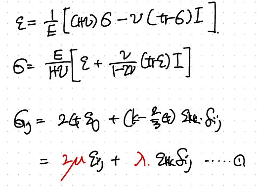
Constitutive Law for the Linear elastic isotropic.
그리고 설정된 가정들,
1. 현재 우리는 small deformation을 관찰중!!, (변형이 아주 작은 경우)
2. Elastic -> No dissipation , + small deformation -> quadratic free E.
3. Cauchy 의 탄성 이론,
4. F = ma 즉, Linear momentum conservation Eq.
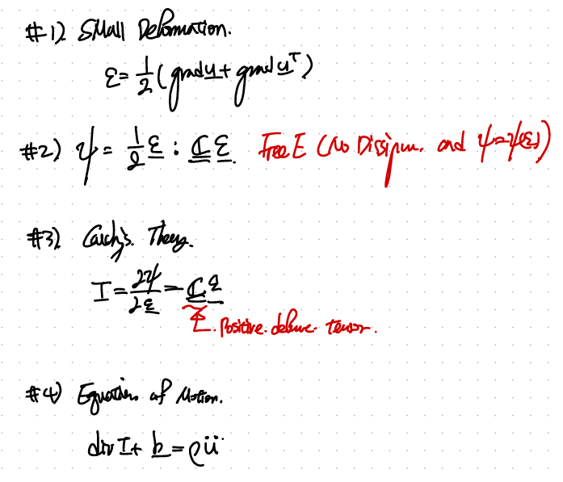
여기서 우리가 더 해볼 수 있는 것은, 바로
1번 Constitutive Law식을 -> #4) Equation of motion의
Cauchy stress항에 대입하는 것!.
(유체역학으로치면, Newtonian fluid의 linear viscosity - strain rate식을,
Linear momentum식에 대입하여, Naviers stokes equation을 유도하는 것!)
1번 식의 stress 항을 대입한후, divergence항을 두개로 나누어 주자.
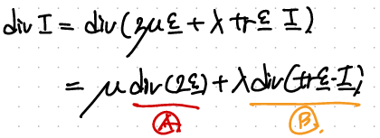
천천히, 초반에 배운 index notation을 활용하면 쉽게 해결된다.
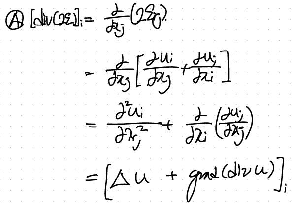
B part는 주의할점이 Trace of (eij) = div (v) 라는 것!
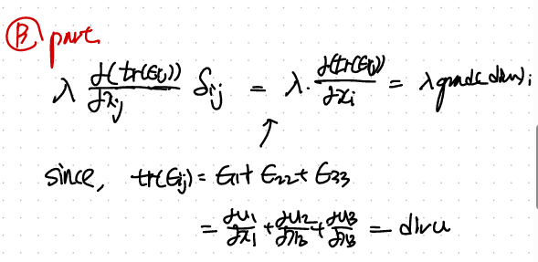
이제 다시 원래 식에 대입해주면, Equilibrium of Motion 식이 다음과 같이 표현된다.
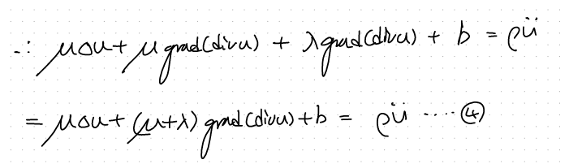
여기서, 5번 식을 이용하여 4번식을 rotational, irrotational part로 구분하여 표현할 수도 있다.
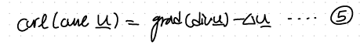
(증명은 바로밑에 있습니다~)
최종적으로 6번 식이 도출됩니다.
다시 또 말하지만 Isotropic Linear Elastic Material을 분석 중입니다~.
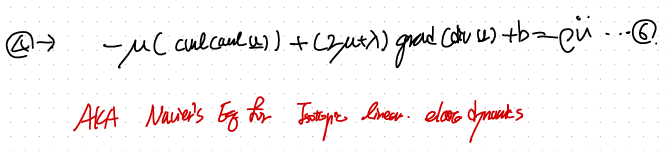
(5번식 증명)
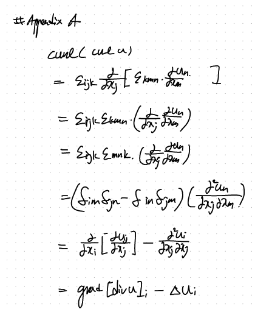
만약에 Anisotropic Linear elastic Material이라면?
우리가 맨처음에 시작한 1번의 Constitutive Law를 사용할 수가 없다.
따라서,
T_ij = C_ijkl e_kl
Anisotropic property정보가 담긴 Cijkl (elastic modulus tensor)를 표현 후,
Equation of motion에 대입해주면 7번식으로 표현가능하다.
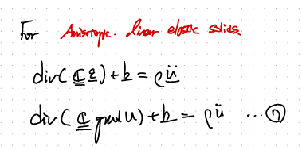
아주 간단해 보이지만, 바로 이후에 Boundary condition value problem에 사용될
4번 6번식을 꼭 기억하자.
(요약하자면..)
지금까지 열심히 이해해온, Linear elastic isotropic Constitutive Law와
Equilibrium of motion을 연결시켜 4,6식을 도출하였다.
Equilibrium of motion은 Linear momentum 보존 방정식이었다.
즉, 기본적인 전통적인 F = ma로부터 유도된 식이다.
따라서 어떤 물질이던 상관없이 성립한다.
하지만, Constitutive Law같은 경우는,
(자세한 내용은 이전 포스터를...)
우리가 Stress, Helmoltz Free energy가 small deformation에서
strain즉 deformation에 관한 함수라는 가정으로부터 시작되었다.
따라서!!!! 이후에 배울 내용, plasticity, hyperelasticity는
전부 constitutive Law가 다르지만,
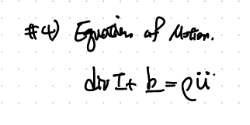
이 식은 여전히 성립한다.{% endraw %}